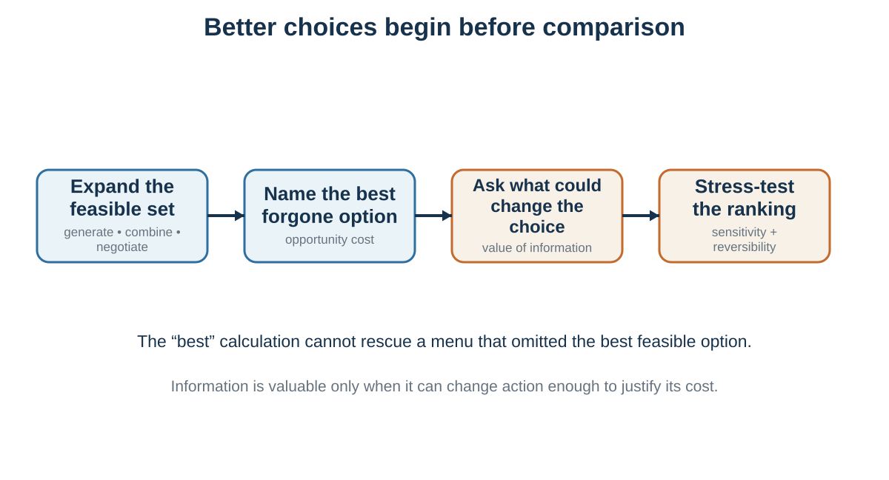

Part 1 · About 7 min read
Chapter 3. Opportunity Cost, Information, and Better Options
The quality of a choice depends on the menu and the information that could change it
Learning goals
- Explain opportunity cost as the best feasible alternative forgone.
- Use value of information to decide whether a test or question is worthwhile.
- Build a multi-objective decision table without false precision.
- Match the amount of analysis to stakes, reversibility, and uncertainty.
Every choice uses scarce resources and excludes alternatives. Opportunity cost is the value of the best feasible alternative forgone. It is not merely the money paid, and it is not the sum of all unchosen options.
The cost of a two-hour meeting is the best alternative use of those two hours. The cost of spending one million euros on advertising includes the best foregone use of that capital: product development, hiring, debt reduction, customer support, or reserves. The cost of a high-paying job with long hours includes the best alternative career path, time, health, relationships, and future options sacrificed.
Opportunity cost changes the question from "Is this option good?" to "Is this better than the best feasible alternative?" Many options look attractive in isolation. Rational comparison requires making the alternative concrete. Research on opportunity-cost neglect shows that people are more likely to consider sacrifice when the forgone alternative is explicitly represented.
Option creation and opportunity cost are therefore linked. A negotiator who sees only accept or reject may miss redesigned payment terms, timing, risk sharing, warranties, or future cooperation. Creating a better alternative changes the opportunity cost of the existing menu.
Information has value only when it can change action

A rational decision-maker should not gather all available information. Information is valuable when it can improve action enough to justify its cost.
Opportunity costs are often neglected when the best forgone alternative is not explicitly represented (Frederick et al., 2009).
The expected value of information is the expected utility achievable after learning the information minus the expected utility achievable without it. Net value subtracts the cost of obtaining, processing, and waiting for the information. Perfect information reveals the relevant state completely; sample information, such as a survey or pilot, only changes probabilities.
In practical terms, a reference check has value if it can change a hiring decision. A diagnostic test has value if treatment differs by result. A prototype has value if it reveals demand or feasibility before full investment. A negotiation question has value if it uncovers an interest or constraint that changes the agreement. Information has little instrumental value when no plausible result would alter action.
Information can also have costs: delay, money, attention, privacy, false precision, or strategic exposure. In negotiation, asking a question may reveal priorities. In a fast-moving market, waiting for more evidence may destroy an option. The value of information is therefore decision-specific and time-sensitive.
Net value of information = expected utility with information - expected utility without information - information cost
Multiple objectives and decision tables
Important decisions rarely have one objective. A job choice involves income, learning, autonomy, health, location, culture, mission, risk, relationships, and future options. A university program involves revenue, mission, student value, faculty workload, reputation, access, and strategic fit. Multi-criteria decision analysis makes these dimensions visible.
Value-of-information and multi-attribute analysis make the benefits of learning and trade-offs inspectable (Raiffa, 1968; Keeney & Raiffa, 1976).
A simple decision table can compare alternatives across criteria, identify whether each entry is a prediction or value judgment, and show uncertainty. More formal models assign scales and trade-off weights. The purpose is not to replace judgment with arithmetic. It is to discipline judgment by exposing what is being counted, how it is valued, and where the conclusion is sensitive.
Three cautions matter.
First, avoid double counting. Prestige, future options, and salary may partly reflect the same underlying advantage. Second, weights are trade-off statements, not mere ratings of abstract importance. Saying health has weight 30 and learning has weight 25 is meaningful only relative to defined scales. Third, use sensitivity analysis. A table that produces one exact score from highly uncertain inputs can create false precision.
The table should make disagreement discussable. One person may believe demand is high but value mission more than revenue. Another may value revenue but predict low demand. Structure clarifies the disagreement; it does not manufacture consensus.
Worked transfer: the executive program
The recurring university case illustrates how the benchmark organizes an institutional decision without pretending to eliminate judgment. The decision can be framed as whether to launch a defined pilot for a defined audience, date, capacity, and budget. The feasible set includes a full launch, smaller pilot, partnership, short certificate, market test, delay, or no launch.
Beliefs concern enrollment, price, employer sponsorship, faculty workload, completion, reputational effects, and competitor response. Values concern mission, revenue, student learning, access, faculty welfare, strategic visibility, and tolerance for downside. Constraints include accreditation, calendar, staff, marketing capacity, and decision rights. Opportunity cost is the best alternative use of the same faculty time, money, and institutional attention.
The decision may be fragile because several probabilities are uncertain. Instead of inventing precise numbers, the university can use scenarios and sensitivity analysis. A prototype workshop, employer interviews, or a small pilot has information value if its outcomes would alter the scale, price, design, or decision to proceed. The final choice should include review dates and stopping, revision, or scaling criteria. Rational analysis therefore turns a debate of slogans into an explicit, testable model.
The benchmark across DPN
The benchmark applies beyond solitary choice.
In decision-making, it clarifies the actor's feasible alternatives, beliefs, values, constraints, and information needs. In persuasion, it helps diagnose what a message is trying to change: beliefs about consequences, valuation of outcomes, perceived feasibility, or the option set. Ethical persuasion should not disguise a value claim as a factual prediction or hide alternatives. In negotiation, each side has a feasible set and an outside option. Agreement changes the feasible set, redistributes value, and depends on beliefs about what the other side will accept and implement.
A BATNA - the best alternative to a negotiated agreement - is an opportunity-cost concept. Reservation values depend on the utility of alternatives, not merely on the other side's first offer. Integrative negotiation creates value by discovering differences in beliefs, priorities, risk tolerance, timing, and capabilities. Game theory later adds strategic interdependence: the best action can depend on what others do.
Application: hiring
Hiring illustrates why rational analysis and structured judgment belong together. The organization must define job-relevant outcomes, predict candidate performance, value different contributions, and respect legal and ethical constraints. A vague instruction to "hire the best person" leaves the model hidden.
A better process defines success before seeing candidates, specifies criteria and evidence sources, uses comparable questions and work samples, records independent ratings, and tracks later performance. Structured methods generally provide more reliable prediction than unstructured impressions, although validity depends on role, implementation, range restriction, and the quality of the criterion being predicted. A numeric score is useful only if the underlying target and evidence are legitimate.
Decision design is power
Understanding the decision loop creates influence. Whoever sets a default, frames a statistic, orders a menu, displays popularity, controls friction, or decides what feedback appears has power. The same mechanisms can support autonomy or exploit inattention.
Ethical design clarifies relevant information, preserves meaningful alternatives, reduces unjustified friction, and helps people act on goals they would endorse under reflection. Manipulative design hides costs, narrows agency through identity threat, exploits fear or inertia, or makes refusal technically possible but practically difficult.
Decision science should therefore teach both influence and resistance. People need to understand how environments shape them, and designers need standards for using that knowledge.
Table 3.1 When information is worth pursuing
| Information request | Could it change action? | Likely value |
|---|---|---|
| Another general report repeating known facts | No clear decision branch changes. | Low; may create reassurance or delay. |
| A reference check on a role-critical behavior | Yes; could change ranking or contract terms. | Potentially high. |
| A small market pilot before irreversible launch | Yes; can update demand and implementation beliefs. | Often high when the pilot is informative and cheap. |
| A diagnostic test when treatment is identical either way | No treatment choice changes. | Low instrumental value, though it may have other purposes. |
| A negotiation question about timing constraints | Yes; may reveal a trade that creates value. | High when timing differs across parties. |
Key ideas
- Optimization inside a poor option set is still a poor decision; good decision-making creates alternatives, names the best forgone option, and seeks information only when it can change action.
- Explain opportunity cost as the best feasible alternative forgone.
- Use value of information to decide whether a test or question is worthwhile.
- Build a multi-objective decision table without false precision.
Study and practice
-
How would you explain opportunity cost as the best feasible alternative forgone?
-
How would you use value of information to decide whether a test or question is worthwhile in practice?
-
Build a multi-objective decision table without false precision?